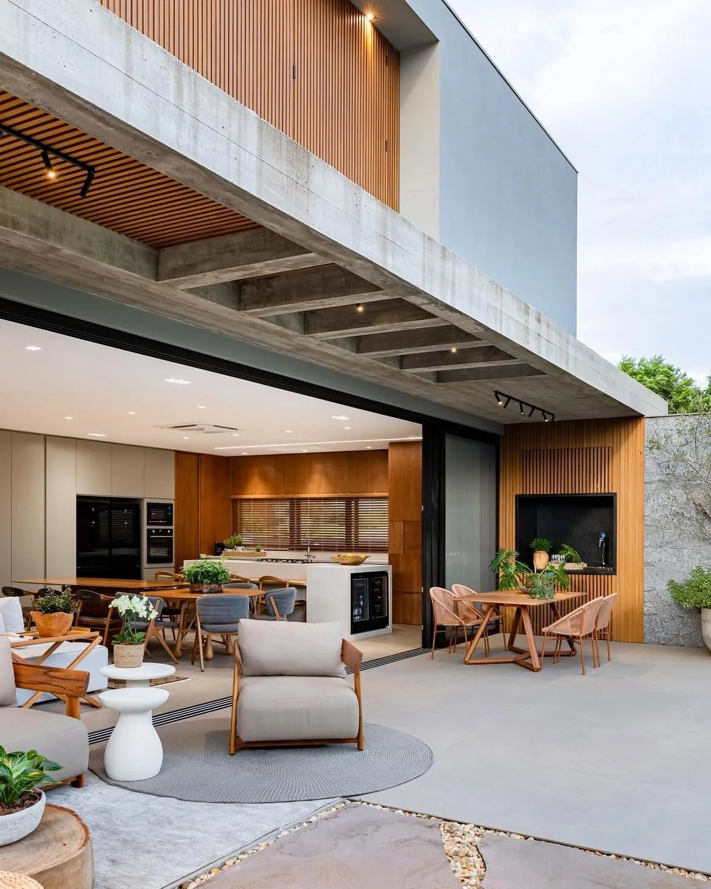
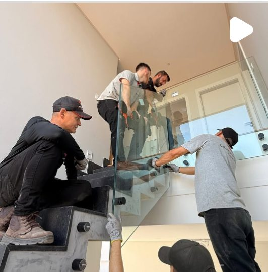
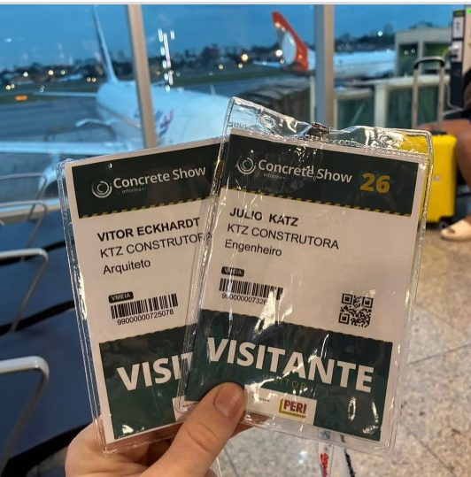
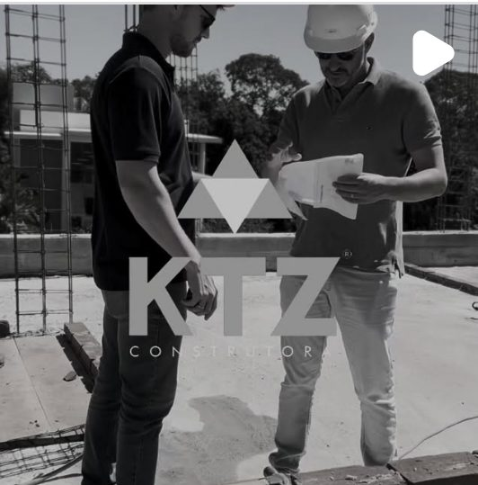
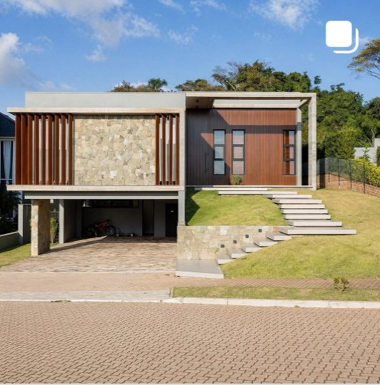
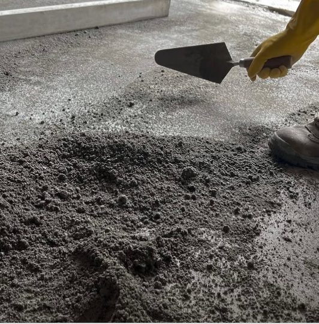
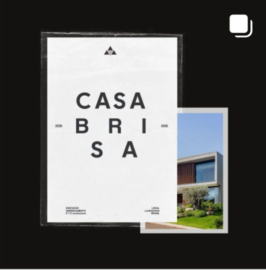

Projetos extraordinários merecem uma execução à altura.
A KTZ recebe o projeto arquitetônico e conduz a obra do planejamento à entrega — com gestão, organização e atenção aos detalhes.
Uma construtora para quem já sabe o que quer construir.
A KTZ não desenvolve o projeto arquitetônico. Nosso trabalho começa quando o projeto precisa sair do papel e virar obra — com organização, acompanhamento e responsabilidade em cada etapa.
O projeto vem primeiro.
A arquitetura orienta a execução. O papel da KTZ é materializar o que foi projetado.
A obra precisa ser bem gerida.
Custos, decisões e rotina de execução são acompanhados com método e registro.
O cliente participa do processo.
A construção é conduzida junto ao proprietário, sem transformar uma obra de alto padrão numa sequência de improvisos.

Uma nova marca sobre uma experiência já construída.
Experiência
Mais de 100 residências executadas ao longo da trajetória de Julio Katz.
Posicionamento
Execução de residências de alto padrão e maior porte.
Operação
Capacidade planejada de 3 a 4 casas por ano, com acompanhamento próximo.
O portfólio fala antes da primeira reunião.
Uma seleção de residências executadas pela KTZ. Clique nas imagens para ver em tela cheia.
CASA
BRISA
- Local
- Lajeado · RS
- Período
- 2025 – 2026
- KTZ
- Execução e gerenciamento
Volumes limpos, madeira, vidro e pedra natural. Uma arquitetura que exige precisão em cada encontro de material — e uma execução que respeita o desenho até o último detalhe.
O projeto continua sendo do arquiteto.
A KTZ entra para executar. Isso significa respeitar soluções, detalhamentos e intenções do projeto, mantendo comunicação direta com o escritório durante toda a obra.
“A KTZ não concorre com o arquiteto. A execução precisa valorizar a assinatura de quem projetou.”Conversar sobre uma obra
Leitura antes da execução
O projeto é entendido antes de transformar decisão em canteiro.
Fidelidade aos detalhes
Materiais, encontros, proporções e especificações aparecem na obra como foram pensados.
Comunicação durante a obra
Dúvidas de execução voltam para quem projetou antes de virarem adaptações definitivas.
Um link para apresentar ao cliente
Portfólio, método e histórico organizados num só lugar — para o escritório indicar a KTZ com segurança.
Da entrega do projeto à entrega da casa.
O processo existe para dar clareza à execução e reduzir improvisos numa obra que exige muitas decisões.
Recebimento do projeto
Entendimento do material arquitetônico, escopo e condições de execução.
Planejamento da obra
Organização de etapas, recursos e decisões que antecedem o canteiro.
Execução
Obra conduzida com equipe padronizada, ferramentas e acompanhamento das etapas.
Gestão de custos
ObraPrima como apoio à gestão e ao acompanhamento dos custos da obra.
Entrega e manual
Entrega acompanhada de um manual da residência, com referências e especificações.
Alto padrão também é a forma como a obra é conduzida.
Equipe em campo, atualização técnica e o cuidado com cada etapa — acompanhe no Instagram.

Instalação do guarda-corpo em vidro
Concrete Show 2026
Na obra, com a equipe
Residência concluída
Acabamento de piso em concreto
Casa Brisa · 2025–2026Antes de falar com a KTZ.
Alguns pontos ajudam a entender se o perfil da sua obra está alinhado com a construtora.
A KTZ desenvolve o projeto arquitetônico?
Não. A KTZ atua na execução. O projeto arquitetônico chega pronto, e a construtora trabalha para transformá-lo em obra respeitando as definições do arquiteto.
Qual o perfil de residência atendido?
O foco são residências de alto padrão e maior porte. Hoje, a KTZ não orça casas abaixo de 250 m².
Em quais cidades a KTZ constrói?
Atualmente, a execução está concentrada em Lajeado/RS. A expansão para outras localidades depende de avaliação operacional de cada projeto.
Como funciona o trabalho com o arquiteto?
A KTZ recebe o projeto e conduz a execução mantendo diálogo com o escritório responsável sempre que uma decisão de obra exige validação.
Como os custos da obra são acompanhados?
A empresa utiliza o ObraPrima como ferramenta de apoio à gestão dos custos, dentro do processo de acompanhamento da obra.
O que recebo ao final da obra?
Além da casa, um manual da residência com as referências do que foi executado — cores, materiais e especificações — para facilitar a manutenção ao longo dos anos.
Seu projeto está pronto para sair do papel?
Se a residência já tem projeto arquitetônico e está alinhada ao perfil de execução da KTZ, podemos conversar sobre os próximos passos.